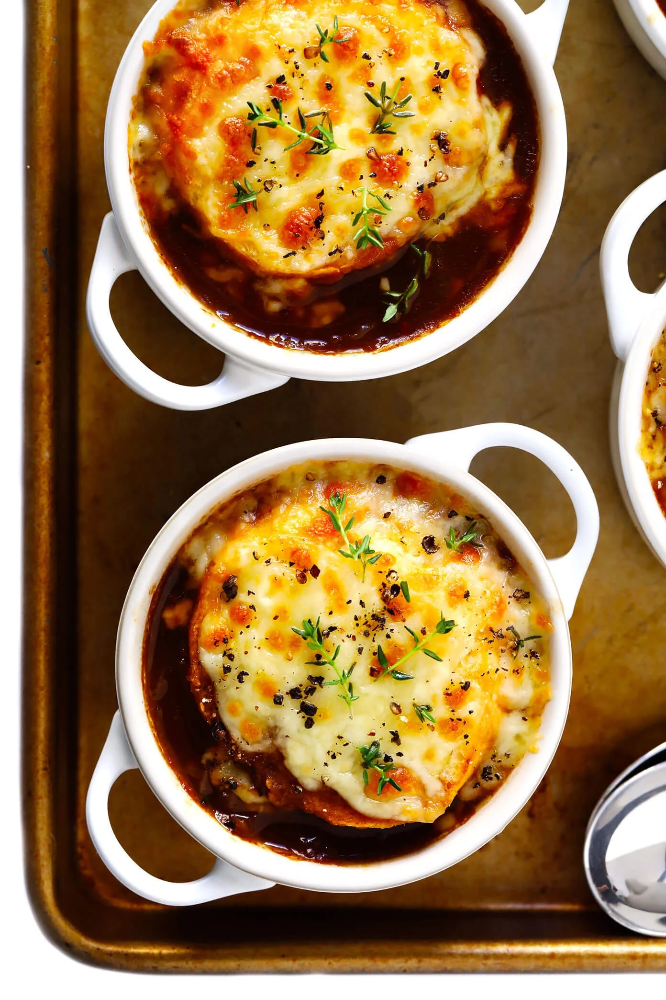

Home
French Onion Soup

Description
A warm and comforting meal perfect for rainy days.
Worth the wait!
Ingredients
- 4 pounds yellow onions, peeled and thinly sliced (approx 5-6 large onions)
- 3 tablespoons butter
- 4 cloves garlic, minced
- 3 tablespoons flour
- 1/2 cup dry white wine
- 6 cups of beef stock (or veggie stock)
- 1 teaspoon Worcestershire sauce
- 1 bay leaf
- 3 sprigs fresh thyme
- fine sea salt and freshly-cracked black pepper, to taste
- baguette
- grated or sliced cheese (such as Gruyere, Asiago, Swiss, Gouda, or Mozarella)
Steps
- In a large heavy-bottomed stockpot, melt the butter over medium-high heat.
Add the onions and saute until well done, about 30 minutes, initially stirring every
3-5 minutes, then about once aminute near the end of carmelization to prevent burning.
Add garlic and saute for 2 minutes. Stir in the flour and cook for an additional 1 minute
Stir in the wine to deglaze the pan, using a wooden spoon to scrape up any browned bits on the
bottom of the pan.
- Add the stock, Worcestershire, bay leaf, and thyme and stir to combine. Continue to cook
until the soup reaches a simmer. The reduce heat to medium-low, cover and simmer for
at least 10 minutes. Discard the bay leaf and sprigs of thyme. Taste the soup and
season with salt and pepper as needed.
- Preheat the oven to 400F. While the soup is simmering, slice the baguette into
1-inch thick pieces and arrange them in a single layer on a baking sheet. Bake for
6-8 minutes, until the bread is toasted and golden around the edges. Remove and set aside.
- Switch the oven to the broiler. Once the soup is ready to serve, place your
oven-safe bowls on a thick baking sheet. Ladle the soup into each bowl, then top with a
baguette slice and about 1/4 cup shredded cheese. Place on an oven rack about 6 inches from
the heat and broil for 2-4 minutes, or until cheese is melted and bubbly. Remove
from the oven and serve immediately while the soup is hot and bubbly.